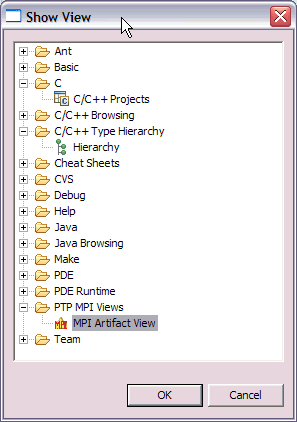
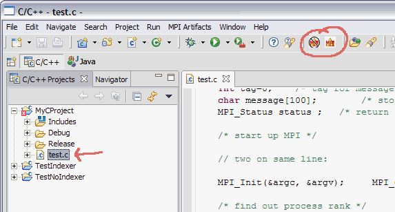
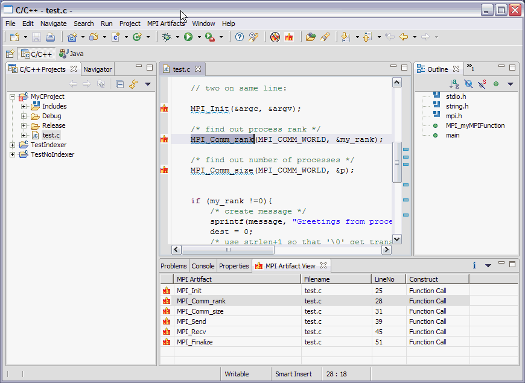
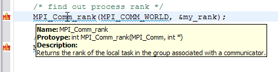
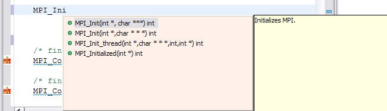
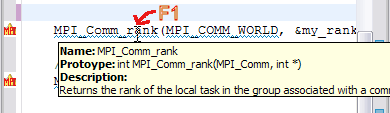
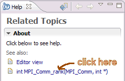
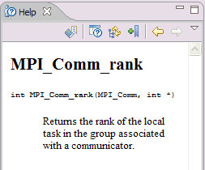

- Create a project (e.g a Managed Make C project) , and within the project, create a C file that includes MPI code. A sample is testMPI.c
Note: A sample C++ file with MPI calls
is helloMPI_cpp_style.cpp.
A sample C++ file with MPI calls in ordinary C style
is helloMPI_c_style.cpp.
- Open the MPI Artifacts view
- or, the view will be opened automatically when analysis is complete.
Window > Show View > Other... > PTP MPI Views > MPI Artifact View

- Select the source file to analyse, to find the MPI artifacts.
Click the MPI button
in the tool bar.

- The MPI Artifact View is opened, if it was not present.
It is
populated with MPI artifacts found.

- Double click on any marker in the MPI Artifact View
to navigate the editor to that line in the source file.
- Hover over the MPI Artifact identified in the source file
(by blue squiggles) to see additional information about that
function call, for example.

- Rows in the MPI Artifact View can be sorted by any of the columns.
Click on the column heading to sort.
- Click the "Clear MPI Artifacts Markers" button
in the tool bar to remove all
the markers.
- You can run the analysis on another file and its markers
will be added to the view.
- You can run the analysis on more than one file (multiple selection)
or a container (folder or project), to analyse more than one file at a time.
Click on a project or a folder, then click the
MPI button
to run it on all C source files in that folder.
- Content Assist
Type an incomplete MPI function name e.g. "MPI_Ini"
and hit Ctrl-Space. The information that is shown
is populated with CDT completions including argument
types, but in addition, the PTP-MPI tools also provide
specific information about actual MPI constant values, etc.
where appropriate, and a yellow popup with additional
textual descriptive information about the function.

- Content sensitive help
Also, if F1 is pressed when the cursor is within
a function name, a help view appears which shows additional information.

Help View appears:

Click on the function name to see more information:

That's all folks.